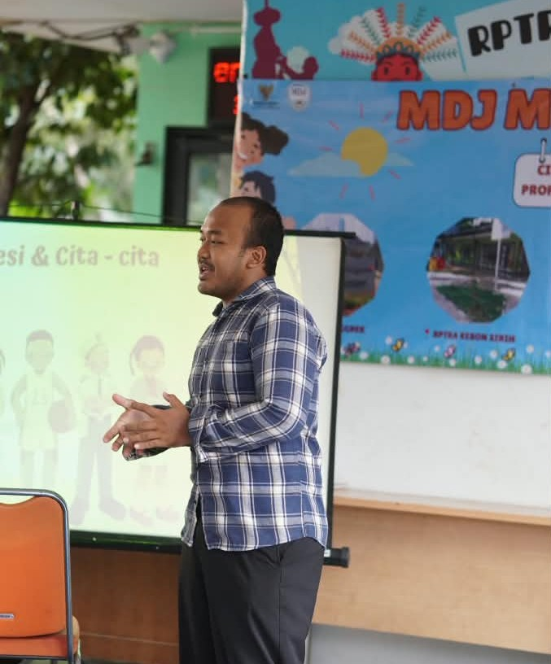

IPK
Bulan Magang
Projek Selesai
Lulusan Universitas Indraprasta PGRI Fakultas Teknik dan Ilmu Komputer Program Studi Teknik Informatika dengan minat di bidang teknologi informasi, khususnya pengembangan aplikasi dan pengelolaan database. Berpengalaman merancang dan membangun aplikasi berbasis database, serta memiliki pemahaman dalam pemrograman, pengolahan data, dan pemecahan masalah teknis. Kemampuan berpikir analitis, ketelitian, dan rasa tanggung jawab, serta terbiasa bekerja secara mandiri maupun dalam tim.

IPK: 3,62 / 4,00
Status: Lulus 2026
Status: Lulus 2022
Saya memiliki pemahaman yang kuat dalam pengembangan web dan pemrograman, serta kemampuan analisis sistem yang baik.
Baik dalam menyampaikan ide
Mampu berkolaborasi
Solutif dalam masalah
Cepat beradaptasi